2025年12月5日至7日，“福建省人工智能学会2025年学术年会暨闽台非遗数字文化基因会议”在福建武夷山圆满举行。本次会议由福建省人工智能学会主办，武夷学院承办，厦门大学、闽台非遗文化数字化保护与智能处理文化和旅游部重点实验室等多家单位联合协办。会议汇聚了来自浙江大学、北京理工大学、西北大学、厦门大学等高校及两岸文化机构的众多专家学者，共同探讨智能科技赋能文化遗产保护与传承的前沿路径。
文旅部重点实验室工作会议：凝聚共识，规划未来
12月5日，闽台非遗文化数字化保护与智能处理文化和旅游部重点实验室召开了年度工作会议。学术委员会主任郭宗明研究员、荣誉顾问彭群生教授、学术委员会成员宗成庆研究员、赵铁军教授、王健研究员、董军教授、郭海鞍教授、徐迎庆教授、实验室主任史晓东教授、副主任姚俊峰教授、王量量教授、周昌乐教授，以及多位实验室成员参会。史晓东教授汇报了年度进展与核心成果，学术委员会专家与成员围绕实验室未来发展进行了深入研讨。
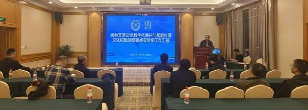
实验室主任史晓东教授作工作汇报
过去一年，文旅部重点实验室在“闽台非遗数字基因库”建设、鼓浪屿与土楼高精度数字化、基于柔性服装的动作捕获、闽台方言智能处理、非遗技艺仿真（如影雕、刺绣）、文旅智能数字人以及甲骨文信息处理等领域取得了一系列坚实成果。其中多项成果已获得国内外认可，获得了ACM SIGGRAPH最佳论文奖、新加坡规划师学会规划奖等奖项。
与会专家充分肯定了部重实验室这一年来所取得的成绩，并针对未来发展提出了诸多建议：一、应凝练核心技术，避免过于分散的研究方向，围绕一个核心的场景，讲好非遗的数字化和智能处理故事；二，全力彰显闽台特色，提高站位，服务国家重大战略需求，以非遗文化交流创新促进两岸和平统一为目标。
部重实验室负责人表示将以此为根基，积极规划并申报重大课题，争取国家及省市层面的持续支持，打造闽台文化数字化领域无可替代的国家级科研与协同创新平台。
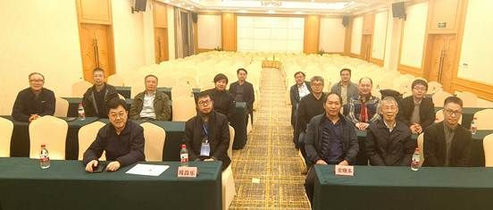
参会人员合影
大会报告：洞察前沿，启迪方向
6日上午，三场高水平大会报告依次展开，为会议奠定了深厚的学术基调，勾勒智能时代文化传承新图景。
浙江大学潘刚教授作了题为《从脑机接口到脑机智能：新趋势与新进展》的报告，深入剖析了生物脑与机器脑深度融合这一人工智能发展的重要趋势，为非遗的沉浸式与神经交互式体验提供了创新实验和前瞻性思考。
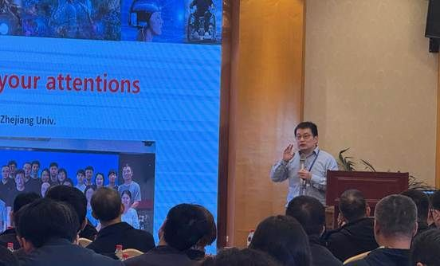
浙江大学 潘刚教授
北京理工大学宋维涛教授在《文化遗产数字化呈现过程的探索与思考》报告中，以三星堆数字复原、法海寺壁画再现等案例，分享了团队在遗产智能化、沉浸化展示方面的最新成果与实践反思。
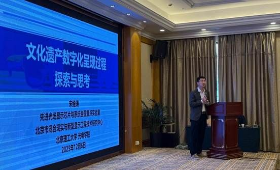
北京理工大学 宋维涛教授
西北大学耿国华教授在《数字化技术赋能非物质文化遗产保护》报告中，系统阐述了如何利用三维重建、VR/AR等技术构建非遗数字档案与沉浸式剧场，为濒危瑰宝注入当代生命力，明确了“技术赋能文化、创新激活传统”的实践路径。
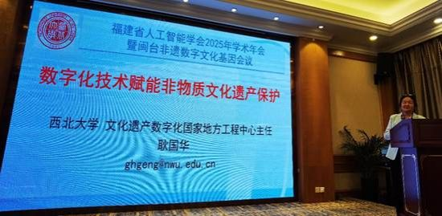
西北大学 耿国华教授
闽台非遗数字文化基因会议：聚焦基因，深度对话
6日下午，在非遗专题论坛上，六位学者围绕闽台特色非遗项目作了精彩报告。
泉州师范学院白志艺副教授以南音传承新模式为维度，去探讨在互联网背景下南音传承方式的新变化，探索更为有效的传承与推广方式，为南音进一步的普及和推广拓展更广阔的空间。
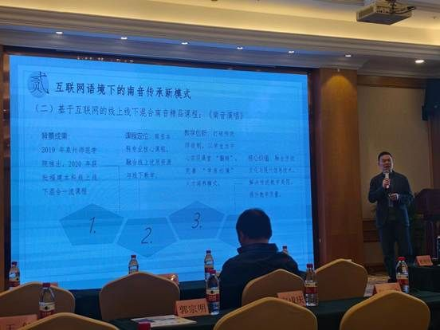
泉州师范学院 白志艺副教授
厦门大学王量量教授通过解析福建土楼的营建工艺，探讨如何更加深入的理解传统建筑的内在智慧与传统文化，从建筑遗产和非物质遗产多角度阐述中国传统建筑的保护。
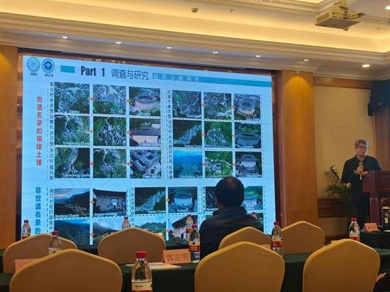
厦门大学 王量量教授
莆田学院黄瑞国教授围绕妈祖文化的概念与妈祖文化数字化保护的范畴及妈祖文化数字化保护，以妈祖母亲文化、景德镇陶瓷文化、民俗福文化等多种文化的有机糅合，阐述了妈祖文化的具象化传承。
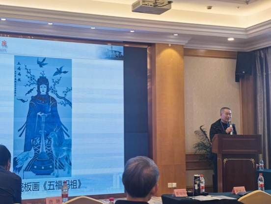
莆田学院 黄瑞国教授
闽南师范大学施沛琳教授（台湾）从非物质文化遗产保护视域下，探讨闽台文化传播，以及AI时代下未来发展趋势。
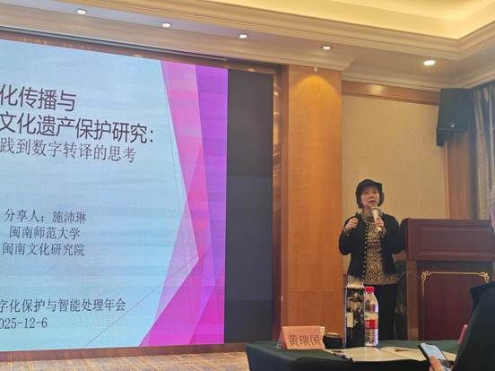
闽南师范大学 施沛琳教授
福州外语外贸学院谢坤达副教授（台湾）聚焦反射转化成像（RTI）技术与人工智能在文化遗产智能修复中的融合应用，展示 RTI + AI 在文物数字孪生、修复建模方面的创新成果。
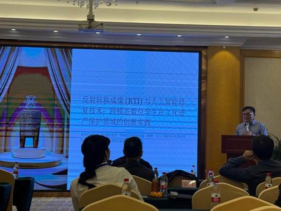
福州外语外贸学院 谢坤达副教授
闽江学院金晖教授从亚洲漆文化圈的角度，综合分析中国漆艺全球传播及亚洲漆文化圈的构建，展示了跨学科、跨地域的研究成果。
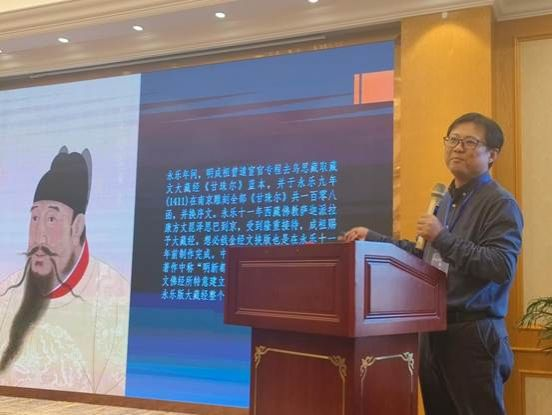
闽江学院 金晖教授
随后举行的“两岸学者圆桌会：非遗基因的界定与共识”将讨论推向高潮。在厦门大学史晓东教授主持下，两岸学者从人文与工科的双重视角，就“文化基因”的概念内涵、闽台非遗的独特性与流动性，以及数字化传承面临的挑战与机遇进行了深度碰撞与对话，初步凝聚了共建数字基因库、协同攻关的共识。
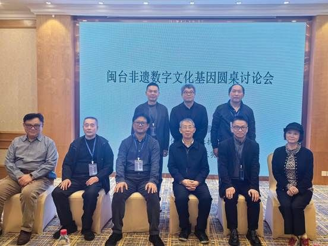
两岸学者圆桌会
会议期间还安排了武夷山非遗展示。与会代表一致认为，本次会议不仅是一场学术盛会，更是一次推动人工智能与闽台非遗保护从“技术结合”迈向“基因融合”的重要契机，为两岸文化的数字共生与创新传承注入了新的活力与信心。
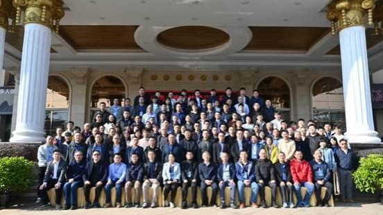
福建省人工智能学会2025年学术年会暨闽台非遗数字文化基因会议合影